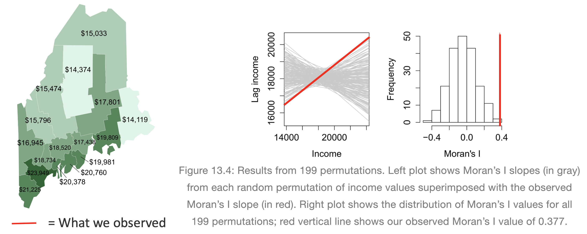
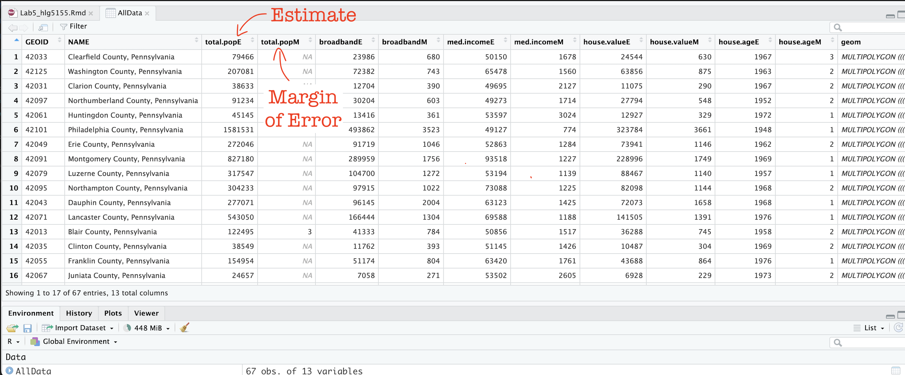
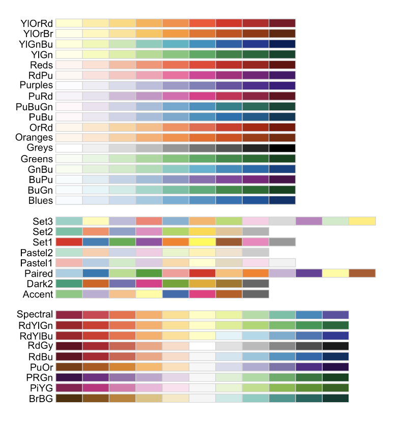
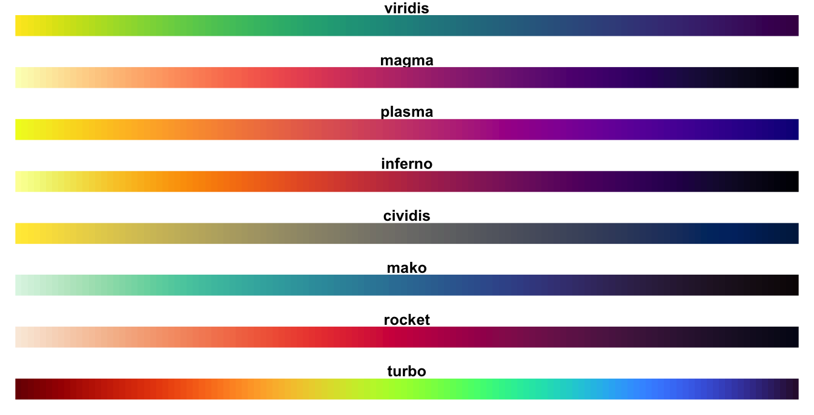

Lab 5: Moran’s I & LISA
GEOG-364 - Spatial Analysis
GEOG-364 - Spatial Analysis
Welcome to Lab 5 Week 1 !
Aims
Today’s lab explores autocorrelation and Moran’s I, covering
scatterplots hypothesis tests, and next week, Local Moran’s I, LISA. In
addition, you will build on last week’s datacamp to use tidycensus data.
THIS IS A TWO WEEK LAB.
You have two full lab sessions, then, Lab 5 is due the week afterwards.
The lab is worth 110 points and there is a rubric at the end of this page.
A. Set-up
Seriously, please don’t skip this. It’s the biggest cause of lab issues.
A1. Create a Lab 5 project
First, you need to set up your project folder for lab 5, and install packages if you are on the cloud.
POSIT CLOUD people, click here to install packages..
Step i:
Go to https://posit.cloud/content/ and make a new project for
Lab 5
Step ii:
Run this code IN THE CONSOLE to install
the packages you need.
- This is going to take 5-10 minutes, so let it run and carry on.
# COPY/PASTE THIS IN THE CONSOLE QUADRANT,
# DON'T PUT IT IN A CODE CHUNK
install.packages("readxl")
install.packages("tidyverse")
install.packages("ggplot2")
install.packages("ggstatsplot")
install.packages("plotly")
install.packages("dplyr")
install.packages("skimr")
install.packages("rmdformats")
install.packages("remotes")
remotes::install_github(repo = "r-spatial/sf",
ref = "93a25fd8e2f5c6af7c080f92141cb2b765a04a84")
install.packages("terra")
install.packages("tidycensus")
install.packages("tigris")
install.packages("tmap")
install.packages("units")
install.packages("spdep")
install.packages("sfdep")
# If you get a weird error it might be that the quote marks have messed up.
# Replace all of them and ask Dr G for a shortcut.Step iii:
Go to the Lab Canvas page and download
the data AND the lab report. Upload each one into your project
folder.
Forgotten how? See Lab 2 Set-Up.
R-DESKTOP people, click here to create your lab project.
A2. Add your data & lab template
Go to Canvas and download the lab template and datasets for this week’s lab. Should be one dataset and one lab template. Immediately put it in your lab 5 folder (or upload it if you’re on the cloud. Rename the lab template to something with your email ID, then open it.
A3. Change the YAML Code
The YAML code sets up your final report. Changing the theme also
helps us to not go insane when we’re reading 60 reports. Expand for what
you need to do.
Step A3 Instructions
Step i: Change the AUTHOR line to your personal
E-mail ID
Step ii: Go here and choose a theme out of downcute,
robobook, material, readthedown or html_clean: https://github.com/juba/rmdformats?tab=readme-ov-file#formats-gallery.
DO NOT CHOOSE html_docco - it doesn’t have a table of contents
Step iii:
Change the theme line on the template
YAML code to a theme of your choice. See the example YAML code below
Note, downcute chaos is different - see below
- Example YAML code if you want
robobook,material,readthedownorhtml_clean. You can also change the highlight option to change how code chunks look. - see the rmdformats website.
---
title: "Lab 5"
author: "ADD YOUR EMAIL ID"
date: "`r Sys.Date()`"
output:
rmdformats::robobook:
self_contained: true
highlight: kate
---- Example YAML code if you want
downcuteordowncute chaos. For white standard downcute, remove the downcute_theme line..
---
title: "Lab 5"
author: "ADD YOUR EMAIL ID"
date: "`r Sys.Date()`"
output:
rmdformats::downcute:
self_contained: true
downcute_theme: "chaos"
default_style: "dark"
---A4. Add the library code chunk
DO NOT SKIP THIS STEP (or any of them!). Now you
need to create the space to run your libraries. Expand for what you need
to do.
Step A4 Instructions
Step i: At the top of your lab report, add a new
code chunk and add the code below.
Step ii: Change the code chunk options at the top to
read
{r, include=FALSE, warning=FALSE, message=FALSE}
and try to run the code chunk a few times
Step iii: If it works, all ‘friendly text’ should go
away. If not, look for the little yellow bar at the top asking you to
install anything missing, or read the error and go to the install
‘app-store’ to get any packages you need.
# IF spdep causes issues, remove and run again. sfdep SHOULD be able to do everything spdep does, it's just pretty new.
rm(list=ls())
library(plotly)
library(raster)
library(readxl)
library(sf)
library(skimr)
library(spdep)
library(sfdep)
library(tidyverse)
library(tidycensus)
library(terra)
library(tmap)
library(dplyr)
library(tigris)
library(tmap)
library(units)
library(viridis)
library(ggstatsplot)
options(tigris_use_cache = TRUE)STOP AND CHECK
STOP! Your screen should look similar to the screenshot below (although your lab 5 folder would be inside GEOG364).If not, go back and redo the set-up!

B: Moran’s showcase
You are first going to practice Moran’s I hypothesis tests in R - with questions that link to lectures in Week 10 and 11 (this week and last), and the two recent discussions on Canvas. You need to answer these in your section “B. Moran’s showcase”.
You will get style marks for making your answers easy to find (sub-headings!), clear and understandable. You lose marks for saying incorrect things or providing vague examples.
Question B1.
- [100 words min] In your own words, define
spatial autocorrelation, distinguishing between
positive, zero and negative spatial
autocorrelation. Describe how each type of autocorrelation is
represented in the Moran’s I metric, and provide a real-world example
for each case to illustrate these concepts (either text or including a
picture/photo you describe).
Question B2.
- [50 words min] Explain why traditional
statistical tests become challenging when working with data that
exhibits spatial autocorrelation. <br> (hint, think about the
assumptions we normally make when taking a sample).
Question B3.
- “H0: Any”pattern” we see is spurious - the data shows Complete Spatial Randomness and is created by an Independent Random Process.”
This week we discussed how a hypothesis test, H0, represents a specific scenario we want to test, and that the p-value gives us the probability of observing some aspect of our data if that scenario were true. We also covered that the simplest baseline scenario to check is whether any observed pattern could be due to an Independent Random Process.
- [50 words min] Explain what Independent
Random Process is, and how it links with Complete Spatial Randomness and
spatial autocorrelation.
Question B4.
[50 words min] Explain what a Monte Carlo [1] process is, and how we use them to conduct a Moran’s hypothesis test. E.g. explain the figure below.
[1] Also known as bootstrapping or an ensemble process.
(Hint, lecture 11A and https://mgimond.github.io/Spatial/spatial-autocorrelation-in-r.html#app8_5 )
[1] Otherwise known as bootstrapping, ensembles or “repeating a process over and over..”

REAL EXAMPLE (REST OF LAB)
C. Wrangling Census data
The way the rest of this lab is structured is that we going to work through an example of analyzing census data using R and testing it for autocorrelation. In this section we get all the columns we need, do some quality control and get everything neat and ready.
C1. Get the data
Your data comes from the American Community Survey, a big government
dataset that is used alongside the the US Census. Normally, I would get
you to directly download your data using using tidycensus,
but the website that provides the accreditation is not working well.
So..
- Go to Canvas and download the Philadelphia dataset. Put this
directly into your Lab 5 project folder (or upload directly into your
lab 5 Posit Cloud project).
- Now read the data into R using the st_read command and save it as a
variable called AllData
e.g.
AllData <- st_read("PennACS.gpkg")
How Dr G got the census data
I will download my data directly from the American Community
Survey using tidycensus. You do not have to do
this, but just in case, you might need it in real life, here is
my code and a tutorial.
Expand for a tidycensus tutorial
(you do not need this for this
lab)
# This comes from the tidycensus library
PennACS.sf <- get_acs(
survey = "acs5",
year = 2020,
state = "PA",
geography = "county",
geometry = TRUE,
output = "wide",
variables = c(total.pop = "B05012_001",# Total population
med.income = "B19013_001",# Median income
total.house = "B25001_001",# Total housing units
broadband = "B28002_004",# Houses with internet
house.value = "B25075_001",# House value
house.age = "B25035_001"))# House age
# Then I save your data to a file, which you can access on canvas
st_write(PennACS.sf,"PennACS.gpkg")To understand what I’m doing, here’s a full tutorial that I wrote a few years ago:
C2. Estimates vs margins of error
In the previous step, you should have read in the data. Now click on
AllData to take a look and understand what is there.
You should now see that you have census data for Pennsylvania at a county level for these variables. In fact, for every one, it has downloaded the ESTIMATE, but also has included the MARGIN-OF-ERROR, the 90% confidence interval on our result (90% of the time our result should be within this margin of error)
The total population in each county (
total.popEandtotal.popM)Median income of people in each county (
med.incomeEandmed.incomeM)The total number of houses in each county (
total.houseEandtotal.houseM)The total number of houses with broadband in each county (
broadbandEandbroadbandM)Mean House Value in each county (
house.valueEandhouse.valueM)Mean House Age in each county (
house.ageEandhouse.ageM)
Note a few columns are slightly different here - I rearranged them after making the screenshot

C3. Tidy the data
First, let’s remove the margin of error columns using dplyr select.
They are normally very useful, but I want things as clear as possible
for this lab. We can also make a working version of the data.
- The code below shows how to select and rename columns. Copy it over
into your lab report and check it runs. You do not need to edit
anything,
select(): Lists all the columns you want to keep, leaving out the “M” columns.rename(): Renames each selected column, removing the “E” suffix for each specified column.
PennACS_sf <- AllData %>%
dplyr::select(
GEOID, NAME, total.popE,
med.incomeE, total.houseE, broadbandE,
house.valueE, house.ageE, geom) %>%
dplyr::rename(
total.pop = total.popE,
med.income = med.incomeE,
total.house = total.houseE,
broadband = broadbandE,
house.value = house.valueE,
house.age = house.ageE)C4. Calculate county areas
We currently have the TOTAL number of people/houses/beds/things in each county, but it is also useful to have the percentage or rate, especially as each of our counties is a different size. First, let’s get the areas.
#Finding the area of each county
Area_M2 <- st_area(PennACS_sf)
# This is in metres^2. Convert to Km sq and add it as a new column
# and get rid of the annoying units format
PennACS_sf$Area_km2 <- set_units(Area_M2, "km^2")
PennACS_sf$Area_km2 <- round(as.numeric(PennACS_sf$Area_km2), 2)C5. Calculate rates and densities
We currently have the TOTAL number of people/houses/beds/things in each county, but it is also useful to have the percentage or rate, especially as each of our counties is a different size.
To calculate these we simply use the mutate command. If
mutate doesn’t make sense, see this tutorial: https://crd150.github.io/lab2.html#Creating_new_variables
- Run this example which will calculate the percentage of people in
each county who use broadband and save as a new column called
broadband_percent.
PennACS_sf <- mutate(PennACS_sf, broadband_percent = broadband/total.house)- Make a new code chunk, copy/paste this code then edit it so that you create a new column called pop.density and calculate the number of people per square km (hint, you have your new Area_km2 column..)
C6. Check for empty polygons
Now.. one quirk of R is that it hates empty polygons. IF YOU GET ERRORS PLOTTING, I BET THIS IS WHAT IS HAPPENING.
In the census we often get them, for example there might be a polygon around a lake that doesn’t actually have people living there.
So first, let’s check for and remove any empty polygons. Get this code running in your report.
# look for and remove empty polyons.
empty_polygons <- st_is_empty(PennACS_sf)
PennACS_sf <- PennACS_sf[which(empty_polygons==FALSE), ]
D. Describe the data
D1. Describe the data in words
Now, in the report, describe the dataset. Explain what the object of analysis is, the spatial domain, the spatial representation and make a bullet point list of all the variables and their units.
D2. Make some maps
tm_shape(PennACS_sf) +
tm_polygons(col="total.pop",
style="pretty", legend.hist = TRUE,
palette="Reds") +
tm_layout(main.title = "Population per county PA",
main.title.size = 0.75, frame = FALSE) +
tm_layout(legend.outside = TRUE) - Above is some code that will make a map of the raw population.
Use/adjust this example code to make chloropleth maps of these columns
in PennACS_sf.
- “med.income”,
- “house.age”,
- “broadband_percent” and
- “pop.density”
- If you are on posit cloud and it crashes, you only have to choose one or two maps and comment that you are on the cloud.
Plotting help and color palette codes
- Your maps DO NOT have to be interactive, so leave tm_mode(“plot”).
- To make your maps more interesting, see below for some common color palettes. You can also play with the style option to see different breaks (?tm_polygons) - or see here for even more options. http://zevross.com/blog/2018/10/02/creating-beautiful-demographic-maps-in-r-with-the-tidycensus-and-tmap-packages/
Common color palettes
My example uses “Reds” from colorbrewer

and from the viridis package

D3. Explain the maps.
- [100 words min] Discuss the spatial
autocorrelation, pattern and process you see in each map. e.g. Two
sentences for each map.
D4. Comment on autocorrelation
- [50 words min] From your maps, decide on a variable that exhibits the most positive autocorrelation and the variable that exhibits the most negative autocorrelation (it might still be clustered, just the furthest negative) and explain your reasoning.
E. Spatial weights and autocorrelation
Here we will continue with our example, focusing on spatial autocorrelation.
Create a spatial weights matrix to decide nearest neighbours
Create and interpret a moran’s scatterplot.
Run a Moran’s I hypothesis test against a H0 of complete spatial randomness.
Next week, we will look at Local Moran’s I.
TUESDAY LAB, CODE IS BEING UPDATED IN JUST A SECOND - I’m getting this online now for people who arrive early.